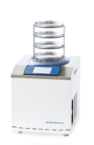

SubliMate® Freeze DryerA world-class laboratory freeze dryer, engineered to be perfect for your laboratory needs.
General
SubliMate® Benchtop Laboratory Freeze Dryer – preservation made to perfection!
Esco SubliMate®, a world-class laboratory freeze dryer, engineered to be perfect for your laboratory needs. Models were designed to reach low condensation temperatures of -55°C for removing aqueous solutions, and up to -90°C for eliminating organic solvents from your precious samples. Different freeze drying applications such as preservation of biological samples, purification of proteins, and concentration of chemical products, are now done perfectly with SubliMate®.
Key benefits:
- Rapid vapour trapping to improve freeze drying process time
- Efficient refrigeration system provides fast cooling time and stable temperatures
- Large, user-friendly touchscreen LCD controller
- Low power consumption
Feature
LusterClear™ fully flushed and clean ice condenser surface design
- One-piece stainless steel ice condenser with smooth walls
- Designed for better mass transport and vapour flow within the system
- Delivers fast, efficient, and reproducible freeze drying performance
IceOut™ Active Defrost System
- Ensures quick and simple ice core removal at the end of the freeze drying cycle
SmarTouch™ Large Touchscreen Control Technology
- Designed to provide all necessary information at a glance
- Equipped with instrument-grade precision platinum temperature probes and pressure sensors finely tuned and tested to ensure the most reliable readout and longest operating lifespan possible.
- Equipped with warning message and mutable alarm for pump and sample protection during operation
- Diagnostic functions provide condenser’s historical data to simplify service
ISOCIDE™ Powder Coat
- Eliminates 99.9% of surface bacteria within 24 hours of exposure
Accesories
Esco offers a variety of options and accessories to meet local applications. Contact Esco or your local Sales Representative for ordering information.
- Vacuum pumps and accessories
- Pirani vacuum gauge
- Vacuum grease, oil, hose, and filter
- Stop valves
- Chambers and shelf systems
- Accessories for freeze drying samples in vials and on trays
- Cover with valves available for simultaneous drying with samples in flasks
- Stand
- With wheels and brakes
- Manifolds
- Accessories for flask freeze drying
- Spare valves
- Adaptors available for different flask sizes
- Connector
- Accessory for freeze drying samples in ampoules
| Model | Description | Capacity | Temperature | Dimensions (W x D x H) | Electrical |
| FDL-2S8 | SubliMate® 2 Benchtop Laboratory Freeze Dryers | 2 kg | -55ºC | 400 x 500 x 395 mm | 220-240 V, 50/60 HZ |
| FDL-5S8 | SubliMate® 5 Benchtop Laboratory Freeze Dryers | 5 kg | -55ºC | 400 x 500 x 475 mm | 220-240 V, 50/60 HZ |
| FDL-5L8 | SubliMate® 5LT Benchtop Laboratory Freeze Dryers | 5 kg | -90ºC | 400 x 500 x 475 mm | 220-240 V, 50/60 HZ |
| FDL-2S9 | SubliMate® 2 Benchtop Laboratory Freeze Dryers | 2 kg | -55ºC | 400 x 500 x 395 mm | 115 V, 50/60 HZ |
| FDL-5S9 | SubliMate® 5 Benchtop Laboratory Freeze Dryers | 5 kg | -55ºC | 400 x 500 x 475 mm | 115 V, 50/60 HZ |
| FDL-5L9 | SubliMate® 5LT Benchtop Laboratory Freeze Dryers | 5 kg | -90ºC | 400 x 500 x 475 mm | 115 V, 50/60 HZ |